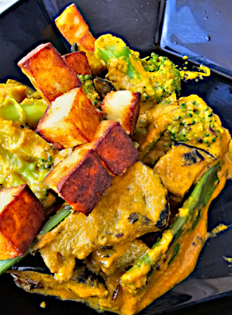

| Zutaten für 4 Personen: | |
| 5-6 | Knoblauchzehen |
| 1-2 | Ingwerstücke |
| 2 | Grüne Chillis |
| 2-3 | Getrocknete Chilischoten |
| 2 | Zwiebeln |
| 3 | Tomaten |
| 12 | Cachewnüsse |
| Blumenkohl | |
| Kartoffeln | |
| Rüebli | |
| Bohnen | |
| Erbsen | |
| Peperoni | |
| 1 TL | Kreuzkümmelsamen |
| 1/4 EL | Kurkuma |
| 1 TL | Chilipulver |
| 1 TL | Fenugreek Leaves / Kasoori Methi |
| 1/2 TL | Kreuzkümmelpulver |
| 1 TL | Korrianderpulver |
| 3 EL | Rahm |
| 1/2 TL | Garam Masala |
| frischer Korriander | |
Masala:
In einer Bratpfanne Öl erhitzen. Darin Knoblauchzehen dünsten. Ingwer zugeben. grüne Chilis zugeben. 40 Sekunden braten.
Getrocknete Chilishoten zugeben. (Achtung, Schärfe!)
Grob gehackte Zwiebeln zugeben. 3-4 Minuten dünsten.
Grob geschnittene Tomaten zugeben. Sowie 12 Cachew Nüsse. 3-4 Minuten dünsten. Es soll alles weich werden.
Etwas auskühlen lassen. Anschliessend sehr fein purieren.
In einer grossen Pfanne die Kartoffeln zuerst und dann den Blumenkohl andünsten. Zeitlich gestaffelt die weiteren Gemüse zugeben. Zum Beispiel Rüebli, Bohnen, Paprika und gefrorene Erbsen. Ein paar Minuten garen. Mit wenig Salz bestreuen.
Ein eine Pfanne wenig Öl erhitzen und Kreuzkümmelsamen erhitzen. Kurkuma dazugeben. Chilipulver dazugeben. Fenugreek Leaves / Kasoori Methi, Kreuzkümmel, gemahlener Korriander dazugeben. Dann das Masala zugeben. Etwas köcheln lassen.
Jetzt das Gemüse dazu geben und ein paar Minuten köcheln lassen. Salzen, 1/2 TL Chili-Pulver, 1/2 TL Kreuzkümmelpulver, 1 TL Korrianderpulver dazu geben. Das Gemüse soll weich gekocht sein.
Mit Rahm verfeinern. Korrianderblättchen dazu geben umd mit Garam Masala dekorieren.
https://www.youtube.com/watch?v=sA4SdbTfHKM
Hervorragend
@LINKBACK_TAG@ @WAKELOCK@